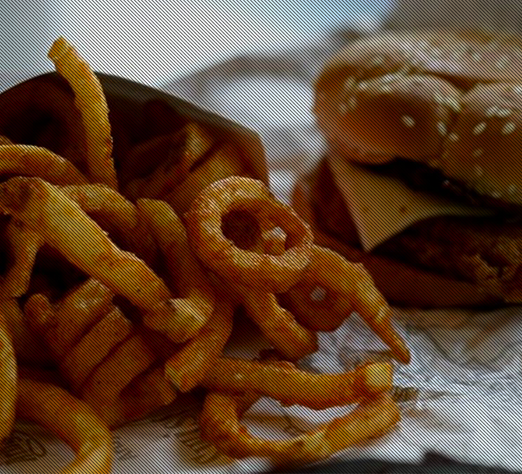
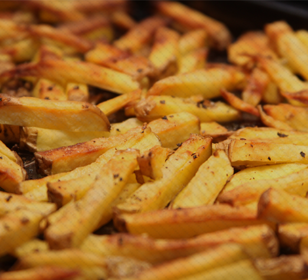

<section class="quoi">
  <div class="row">
    </img>
      <div class="small-6 large-8 small-12 columns text-center"><h2>Ce pour quoi on se lève le matin !</h2></div>
        </img>
        <div class="visutexte">
        <div class="large-6 columns"></div>
        <div class="large-6 columns text-center"><p>A l’origine du <strong>Bas Moteur</strong> il y a une idée simple :<br /> <strong>créer une société qu’on n’aurait jamais envie de vendre.</strong><br />
          <br />Mettre un coup de clef de 18 dans les molaires de la  malbouffe.<br /><br />
          Travailler avec des potes. <br />Bosser quand on veut, où on veut, habillé comme on veut.<br /> <strong>Créer des produits</strong> qu’on a nous-mêmes envie de consommer.<br /><br />
          Toutes ces petites choses qui changent la vie, donnent du sens, et <strong>rendent le travail… différent.</strong><br /><br />
          Au bout il y aura <strong>le succès</strong> ou l’échec, nous verrons bien. Plus que le but, c’est la route qui compte.</p>
        </div>
        <div class="row">
          <div class="large-6 columns text-center"><p>En créant notre Food-Truck une seule chose nous semblait évidente :<br />
          nous voulions des produits qui nous ressemblent : <strong>simples, authentiques,</strong> au plus proche de la nature.<br /><br />
          Des produits sans prise de tête, faciles à comprendre et qui apportent quelque chose de nouveau.<br /><br />
          Et surtout <strong>des produits bons et sains.</strong> Fastfood <strong> MAIS</strong> de qualité !</p>
          <a href="#" class="button ">En savoir +</a>
        </div>
        <div class="large-5 columns"></div>
      </div>
    </div>
  </div>
</section>
